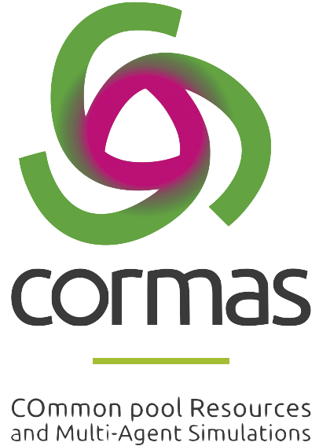

CORMAS : COmmon-pool Resources and Multi-Agent Simulations
Bienvenue sur le site de Cormas VisualWorks !
Cormas est une plateforme de mod�lisation et de simulation multi-agent (ABM) d�di�e � repr�senter les relations entre les soci�t�s et leur environnement. Cormas est destin�e � faciliter la conception d'ABM, ainsi que le suivi et l'analyse des simulations. La plateforme est bas�e sur l'environnement de programmation VisualWorks qui permet de d�velopper des mod�les en Smalltalk. Cormas est un framework � partir duquel, par sp�cialisation et raffinement, les utilisateurs peuvent cr�er des entit�s sp�cifiques pour leur propre mod�le. - Le logiciel Cormas, libre de droits (licence MIT), peut �tre t�l�charg�. Essayez la derni�re version (sortie en f�vrier 2023).  Interface principale de Cormas - Vous pouvez aussi consulter des exemples de mod�les et des �l�ments de bibliographie. - Nous proposons la d�marche ComMod (Companion-Modelling, mod�lisation d'accompagnement).  Une session de ReHab � la conference IUCN 2021, avec Cormas |
 |
Formation � la mod�lisation
Nous organisons r�guli�rement des sessions de formation.
Nous organisons les sessions MissABMS (Multi-platform International Summer School on Agent-Based Modeling & Simulation)
- Ces formations ont r�guli�rement lieu � Montpellier, France � Agropolis International.
- En participant � ce cours, vous acquerrez une culture de la mod�lisation et apprendrez les diff�rentes comp�tences requises pour concevoir des mod�les � base d'agents (ABM) appliqu�s � des syst�mes sociologiques, �cologiques ou socio-�cologiques.
- Points cl�s
- MISS-ABMS est multiculturel en termes d'origines et
de nationalit�s des formateurs et des participants.
MISS-ABMS favorise une pratique collaborative de la mod�lisation et de la simulation. - MISS-ABMS est multi-plateforme : vous pourrez choisir d'impl�menter votre mod�le sur Cormas, Gama ou NetLogo.
- MISS-ABMS pr�sente les diff�rentes �tapes d'un
processus d'un ABM, en mettant l'accent sur la
conception et l'impl�mentation du mod�le.
MISS-ABMS propose un temps important pour le travail de groupe afin de concevoir et de mettre en �uvre un ABM (voir la plaquette ou la video de pr�sentation). - Pour qui
- Chaque ann�e, nous avons le plaisir d'accueillir des
participants aux profils tr�s h�t�rog�nes en termes
d'age, de nationalit�, de formation scientifique et
d'exp�rience en mod�lisation ou en codage. Les
d�butants en ABM qui envisagent de participer � un
projet de mod�lisation dans les mois qui suivent la
formation sont les bienvenus.
Si vous avez des questions concernant votre participation, n'h�sitez pas a nous contacter � :
miss-abms_organizers[at]agropolis[dot]fr - Information et inscription
- Pour plus de d�tails, consultez le site web de l'�cole d'�t� : https://www.agropolis.fr/MISSABMS
Derni�res publications sur Cormas
- Un nouveau tutoriel sur
les outils pour concevoir des interfaces graphiques pour
Cormas est
disponible.
- Regarder la vid�o sur notre vision de "Cormas dans 10 ans" lors de la conf�rence COMSES 2018 :
Quelques r�f�rences pour citer Cormas
- Bommel P., Becu N., Le Page C., Bousquet F., 2015. Cormas,
an Agent-Based simulation platform for coupling human
decisions with computerized dynamics. In, T.
Kaneda, H. Kanegae, Y. Toyoda, & P. Rizzi (Ed.),
Simulation and Gaming in the Network Society. Volume 9
of the series Translational Systems Sciences pp
387-410. Springer Singapore. DOI:
10.1007/978-981-10-0575-6_27. Telecharger la
version pre-publication

- Becu, N., Bommel, P., Le Page, C., & Bousquet, F.
2016. Cormas, une plate-forme multi-agent pour
concevoir collectivement des mod�les et interagir avec
les simulations. In, Journees Francophones sur
les Systemes Multi-Agents (JFSMA). 5 - 7 octobre 2016,
Saint Martin du Vivier (Rouen). ISBN: 9782364935594. T�l�charger la
version sur HAL
- Une version en espagnol
est �galement disponible sur HAL
Cormas, una plataforma multiagente para la modelización interactiva
- Consultez �galement un article sur la communaute des utilisateurs de Cormas dans la revue en ligne JASSS: Journal of Artificial Societies and Social Simulation.
Ce site est maintenu par l'�quipe Green (devenue UMR SENS) du CIRAD. Comment utilisons-nous les syst�mes multi-agents dans le cadre de la gestion int�gr�e des ressources naturelles et renouvelables ? C'est ce que vous d�couvrirez en vous promenant sur ce site...
| Derniere mise a jour : 01 avril 2026 |
.
|